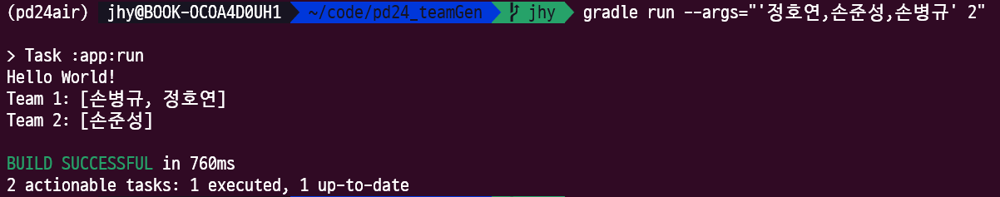

Gradle
Gradle 시작하기
Tech Stack :
github : https://github.com/d-mario24/javarobots
- 과정:
- Gradle 설치하기
- 1. Gradle 설치
- 2. Gradle Test
- 연습하기:
- 결과 
1 2 3 4 5 6 | $ mkdir /opt/gradle $ unzip -d /opt/gradle gradle-8.2.1-bin.zip $ ls /opt/gradle/gradle-8.2.1 LICENSE NOTICE bin getting-started.html init.d lib media $ export PATH=$PATH:/opt/gradle/gradle-8.2.1/bin | cs |
1 | $ gradle test | cs |
1 2 3 4 5 6 7 8 9 | # 요구사항 - [ ] 콘솔프로그램으로 만든다 - [ ] 수강생 목록을 입력 받는다 - [ ] 입력 형식은 콤파로 구문한다 ( ex 김철수,박수만,전두환 ) - [ ] 또다른 입력은 숫자이다. 즉 몇 명씩 조원을 할것인지 ( ex java Abc 김철수,박수만,전두환 2 ) - [ ] 프로그램의 목적은 랜덤하게 조를 편성하는 것이다. - [ ] 함수 … 을 사용하지 않고 public static void main 안에서 모두 처리한다. - [ ] 지정된 repo 에 branch 생성 이후 pr 을 생성하고 진행한다 | cs |
Go Back